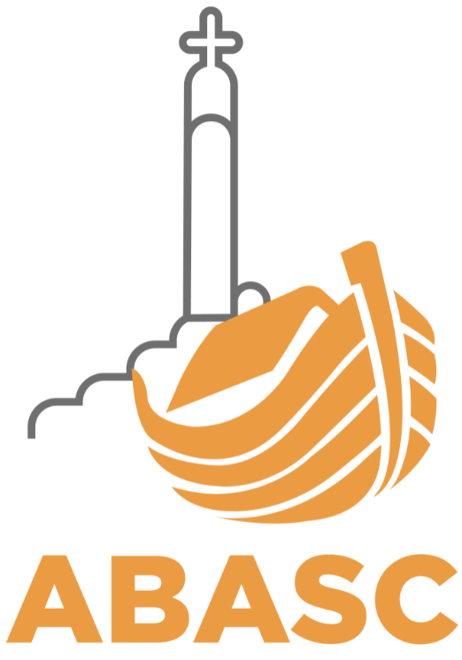
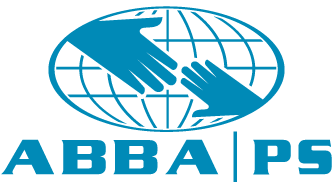
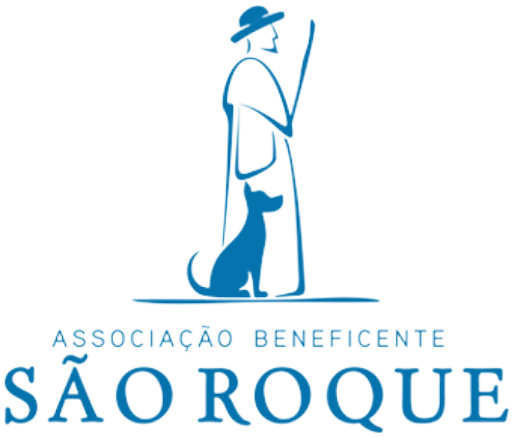
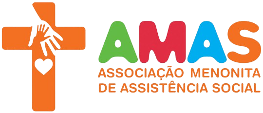

AFECE - Associação Franciscana de Educação ao Cidadão Especial

A AFECE (Associação Franciscana de Educação ao Cidadão Especial) é uma instituição filantrópica em Curitiba, PR, dedicada ao atendimento de pessoas com deficiências múltiplas, especialmente aquelas em situação de vulnerabilidade social. Fundada em 1965, a AFECE oferece serviços de educação, saúde, assistência social e reabilitação, promovendo a inclusão e o desenvolvimento integral de seus atendidos.
A instituição depende de doações para manter e expandir seus serviços, impactando positivamente a vida de muitas famílias. Ao doar para a AFECE, você contribui para a inclusão social e a melhoria da qualidade de vida das pessoas com deficiência, ajudando a instituição a continuar seu trabalho essencial e transformar vidas.
Sua doação faz a diferença!
LBV - Legião da Boa Vontade
A Legião da Boa Vontade (LBV) é uma organização filantrópica brasileira fundada em 1950, dedicada à promoção da educação e assistência social. Com sede em várias cidades, incluindo Curitiba, PR, a LBV trabalha para melhorar a qualidade de vida das pessoas em situação de vulnerabilidade por meio de programas em educação, saúde, segurança alimentar e apoio a famílias.
A LBV é reconhecida por sua transparência e eficiência no uso das doações, garantindo que cada contribuição beneficie diretamente aqueles que mais precisam. Ao doar para a LBV, você ajuda a transformar vidas, promovendo bem-estar e inclusão social.br
Junte-se à LBV e faça a diferença! Sua doação é essencial para construir um futuro mais justo e solidário.
ASP - Ação Social do Paraná
A Ação Social do Paraná (ASP) é uma instituição filantrópica em Curitiba, PR, fundada em 1940. A ASP oferece serviços de educação, saúde, capacitação profissional e apoio às famílias em situação de vulnerabilidade, visando melhorar a qualidade de vida e promover a inclusão social.
A instituição depende de doações para manter e expandir seus projetos, que incluem cursos de capacitação, atendimento médico e odontológico, e distribuição de cestas básicas. Ao doar para a ASP, você contribui para a transformação social e o fortalecimento da cidadania.
Junte-se à Ação Social do Paraná e ajude a construir um futuro mais justo e solidário. Sua doação faz a diferença!
Elos Invisíveis
O Instituto Elos Invisíveis é uma ONG em Curitiba, PR, dedicada à inclusão e integração social de pessoas em situação de vulnerabilidade. A organização oferece projetos de educação, saúde, assistência social e capacitação profissional para comunidades carentes.
A instituição depende de doações para manter e expandir suas atividades, proporcionando suporte e desenvolvimento para crianças, jovens e adultos. Ao doar para o Instituto Elos Invisíveis, você contribui para a transformação de vidas e a construção de uma sociedade mais justa e solidária.
Junte-se ao Instituto Elos Invisíveis e faça a diferença. Sua doação é essencial!
Voluntariado
Por que eu devo fazer minha parte?
Impacto Direto
O voluntariado oferece a oportunidade de causar um impacto positivo imediato na vida das pessoas, fornecendo apoio e assistência onde é mais necessário.
Desenvolvimento Pessoal
Ser voluntário permite desenvolver novas habilidades, ganhar experiências valiosas e aumentar sua compreensão das questões sociais.
Fortalecimento Comunitário
Ao contribuir com seu tempo e esforço, você ajuda a fortalecer a coesão social e promove um ambiente de solidariedade e apoio mútuo.
Satisfação Pessoal
Ajudar os outros pode ser extremamente gratificante, proporcionando um senso de propósito e realização pessoal.
Entendi! Quero ajudar ❤️
em quais instituições eu posso fazer minha parte!?
ABASC – Associação Batista de Ação Social de Curitiba
A Associação Batista de Ação Social de Curitiba (ABASC) é uma organização filantrópica em Curitiba, PR, que promove o bem-estar e a inclusão social de pessoas em situação de vulnerabilidade. Oferece serviços de educação, assistência social, saúde e capacitação profissional.
A ABASC depende de doações para manter e expandir suas atividades, beneficiando muitas famílias. Sua contribuição é essencial para a transformação social e a promoção da cidadania.
Junte-se à ABASC e faça a diferença. Sua generosidade transforma vidas!
ABBAPS - ABBA Promoção Social
A ABBA Promoção Social (ABBAPS) é uma organização filantrópica em Curitiba, PR, dedicada a promover o bem-estar e a inclusão social de pessoas em situação de vulnerabilidade. A ABBAPS oferece serviços de educação, assistência social, saúde e capacitação profissional, visando melhorar a qualidade de vida e fomentar a inclusão social.
A instituição depende de doações para manter e expandir seus projetos, beneficiando crianças, jovens e adultos em comunidades carentes. Ao doar para a ABBAPS, você contribui para a transformação social e a construção de uma sociedade mais justa e solidária.
Junte-se à ABBAPS e faça a diferença. Sua doação é essencial!
ABSR - Associação Beneficente São Roque
A Associação Beneficente São Roque é uma organização filantrópica em Curitiba, PR, dedicada a promover o bem-estar e a inclusão social de pessoas em situação de vulnerabilidade. A instituição oferece serviços de assistência social, saúde, educação e apoio a famílias carentes, visando melhorar a qualidade de vida e promover a dignidade.
A Associação Beneficente São Roque depende de doações para manter e expandir seus projetos, beneficiando crianças, jovens e adultos em comunidades necessitadas. Ao doar, você ajuda a transformar vidas e a construir uma sociedade mais justa e solidária.
Junte-se à Associação Beneficente São Roque e faça a diferença. Sua doação é essencial!
AMAS – Associação Menonita de Assistência Social
A Associação Menonita de Assistência Social (AMAS) é uma organização filantrópica em Curitiba, PR, dedicada a promover o bem-estar e a inclusão social de pessoas em situação de vulnerabilidade. A AMAS oferece serviços de educação, saúde, assistência social e capacitação profissional, visando melhorar a qualidade de vida e fomentar a inclusão social.
A instituição depende de doações para manter e expandir seus projetos, beneficiando crianças, jovens e adultos em comunidades carentes. Ao doar para a AMAS, você contribui para a transformação social e a construção de uma sociedade mais justa e solidária.
Junte-se à AMAS e faça a diferença. Sua doação é essencial!